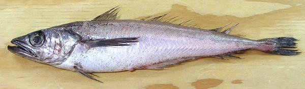
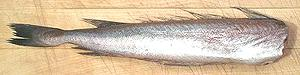

Pacific Hake / Whiting

[]
This cod relative is native to the eastern North Pacific from southern
Mexico to southern Alaska, and is very similar to the Silver
Hake found on the Atlantic side. Pacific Hake doesn't keep well, so
it is usually processed immediately at sea. Most of the catch is
processed into surimi and similar products, as well as fish meal for
aquaculture. Some is sold dressed for human consumption: gutted,
headless and frozen. The fishery is highly regulated and this fish is
IUCN Red List LC (Least Concern). Pacific Hake can grow to 35 inches
and over 2-1/2 pounds, but the photo specimen was 15-1/2 inches
and weighed 13-3/4 ounces.
More on Cod, Pollock, Haddock, Hake &
Whiting.
New England Hake / Whiting
(Merluccius bilinearis). is so
similar to the Pacific Hake I'm presuming the details below are valid for
both.
You will notice this fish is very limp, because the bone structure is
sparse and the flesh very tender. The tender flesh quickly falls apart
with most methods of wet cooking and is not usable for soups or stews.
Cooking:
The flavor of this fish is very mild and the
flesh very tender. I usually pan fry skin-on fillets lightly dusted with
rice flour and eaten with a light
Lemon Wine Sauce
that doesn't mask the taste of the fish. Just fry the non-skin side
first to stiffen the fillet. Skin off filets will probably have broken
up before getting to the pan.
I have poached whole head-off fish and disassembled them on the plate
(I always eat poached fish with pointy chopsticks). Don't try to poach
fillets - they will twist and break up. If you don't want the skin, it's
easy to remove on the plate.

Buying:
Whole fish, like the photo specimen above, are not
at all common. Hake is mostly sold headed, gutted and frozen at sea, in
the form pictured to the left. The whole fish photo specimen above was
purchased from a Philippine market in Los Angeles (Eagle Rock) for
2018 US $1.99 / pound, but US $2.99 in eary 2019.
Scales:
this fish as tiny scales with such poor adhesion
most are rubbed off during capture.The photo specimen fish had only a
few scattered scales.
Prep & Cleaning:
This fish does not contain a whole lot
of innards and is pretty easy to clean. The body cavity extends a ways
farther back than the vent, but is easy to clean out. The gills pull a
bit hard, so use your long nose pliers.
Filleting:
This fish fillets fairly easily, but the
flesh is very tender and care must be taken not to break it up. There's
not a lot of bones or fin rays to follow until you get to the
backbone. The ribs are short, thick and almost horizontal. When you
have cut the fillet free up to the rib cage, cut it from the top of
the ribs and just pull it off the ends. The dark lining of the body
cavity will probably also pull off. Each fillet will have a few
centerline pin bones that should be pulled out straight forward.
Skin:
The skin shrinks only a little in cooking, and
it's flavor is just a little stronger than that of the flesh. It is very
thin and tender, but, with care, it is removable using the standard
long knife and cutting board Method.
On the other hand, you probably don't want to remove it, because it'll
be all that holds the flesh together with most cooking methods. It can
be removed easily after cooking.
Yield:
The photo specimen weighed 13-3/4 ounces and
yielded 6-3/4 ounces of skin-on fillet (49%). Skinless would be 6-1/2
ounces (47%). The more common form, frozen, headless and gutted,
is likely to weigh 8-1/2 ounces with a yield of 6-1/4 ounces of skin-on
fillet (76%). Skin off that was 5-3/4 ounces (68%).
Stock:
Heads, bones and fins make a light colored but
slightly cloudy stock with very little oil (see
Method). Remove what oil
there is using your gravy separator.
sf_hakepz* 100210 r 180205 - www.clovegarden.com
©Andrew Grygus - agryg@clovegarden.com - Photos
on this page not otherwise credited © cg1
- Linking to and non-commercial use of this page permitted